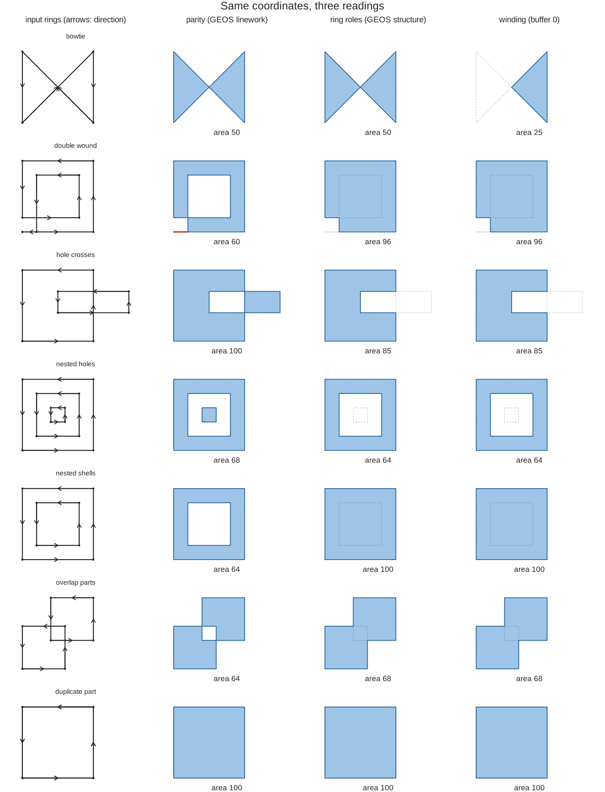
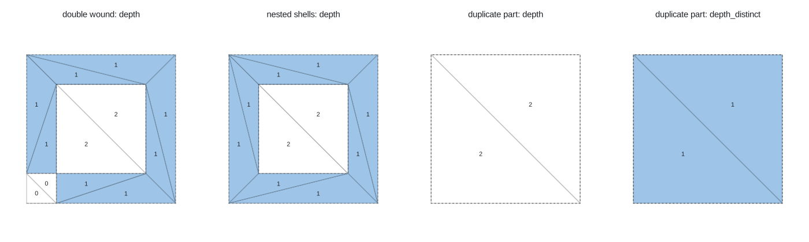

trianglewins / validity
Polygon validity: what "invalid" means and what fixing does
A polygon is a list of rings, and a ring is a list of coordinates. Nothing in that data structure stops a ring from crossing itself, a hole from sitting outside its shell, or two parts of a multipolygon from overlapping. "Valid" is a set of rules laid over the data, and there is more than one set. "Fixing" an invalid polygon means choosing what the coordinates were meant to say, and different tools choose differently.
This page sets out the rules, shows sixteen small pathologies run through GEOS, s2, Clipper, controlledburn and the triangulation packages in this project, and then looks at a real dataset. The short version:
- Most "invalid" data is not ambiguous. Every one of the 9,841 invalid polygons in DEA Waterbodies breaks the same rule: a ring touches itself at a vertex, where two water pixels meet only at a corner.
- When data is ambiguous, there are three readings:
parity (inside if you cross an odd number of edges to get there), ring
roles (union the shells, subtract the holes) and winding (count signed
turns). GEOS
make_validoffers the first two as its "linework" and "structure" methods, andbuffer(0)is the third. - sf and shapely default to different methods.
sf::st_make_valid()uses "structure";shapely.make_valid(), GeoPandas, PostGIS, GDAL, terra and the R geos package use "linework". - A constrained triangulation reads parity for free. The depth that cdtr, laridae and trowel give each triangle is a repair in itself, with no noding step, and it agrees with GEOS linework on every case here once doubled edges are counted once.
The scripts and full results are in the project files
(polygon-validity/): catalogue.R,
catalogue.py, coverage.py,
real-cases.R, dea-invalid.R and
figures.R.
Three meanings of valid
Simple features (OGC and ISO)
This is what GEOS, sf, shapely, PostGIS and GDAL check. A polygon is valid when:
- each ring is closed and has at least four coordinates (three distinct);
- no ring crosses itself, and no ring touches itself, not even at a single vertex;
- holes are inside their shell, and holes are not nested in each other;
- rings may touch each other only at isolated points, never along a line;
- the interior is connected (a hole may not cut the polygon in two);
- in a multipolygon, parts do not overlap and touch only at points.
Repeated consecutive coordinates are allowed. Ring direction is not part of validity: OGC and sf write shells counter-clockwise and holes clockwise, but a polygon wound the other way is still valid.
ESRI shapefiles
The shapefile format allows rule 2 to be broken in one way: a shell may touch itself at a vertex to enclose a hole (an "inverted hole"). Rasters polygonized along cell edges produce these naturally, wherever two pixels meet only at a corner. Shells are clockwise in shapefiles, and the reader has to work out which rings are holes. GDAL's shapefile driver does that by testing which rings lie inside which, which is itself a small repair on read. GEOS can check validity under the ESRI rule, and R's geos package exposes it (see the table below); shapely does not.
On the sphere (s2)
s2 has its own rules. Its loops have no shell or hole role in the
input: with oriented = FALSE (the sf default) s2 decides
nesting by containment, so nested shells and nested holes are valid in
s2 and read by parity. It is stricter elsewhere: a repeated vertex, a
spike back along an edge, or two edges sharing a vertex where a ring
touches itself are all errors.
Topological validity: what a mesh needs
A planar partition, which is what a triangulation or a topology model like wkpool's needs, cares about different things: every crossing must be a vertex, coincident edges must be the same edge, and each face must know what it is inside. Ring roles and winding do not enter into it. A constrained triangulation builds this from any set of segments, valid or not, which is why it makes a good repair tool (see Triangles read parity).
Coverage validity
A set of polygons meant to tile a region, like a land use map or administrative areas, is a coverage. Each polygon can be valid while the set has slivers of overlap or gap between neighbours where shared edges were digitized twice. GEOS 3.12 added a coverage validator and GEOS 3.14 a coverage cleaner; see Coverages.
Sixteen cases
The cases are small squares with coordinates from 0 to 18. All are in
catalogue.R; this table gives what GEOS (through sf, GEOS
3.12.1, and through shapely, GEOS 3.14.1, which agree) and s2
report.
| case | what it is | GEOS reason | s2 reason |
|---|---|---|---|
| bowtie | a ring crossing itself once | Self-intersection | edge 0 crosses edge 2 |
| double wound | a ring that winds twice round an inner square | Self-intersection | edge 0 crosses edge 7 |
| inverted hole | shell touches itself at a vertex, enclosing a hole (ESRI style) | Ring Self-intersection | duplicate vertex |
| hole outside | hole lies entirely outside its shell | Hole lies outside shell | valid |
| hole crosses | hole sticks out through the shell | Self-intersection | loop 0 crosses loop 1 |
| nested holes | a hole inside a hole | Holes are nested | valid |
| split by hole | hole touches the shell twice, cutting it in two | Interior is disconnected | loop 0 crosses loop 1 |
| nested shells | multipolygon with one part inside another | Nested shells | valid |
| overlap parts | multipolygon with overlapping parts | Self-intersection | loop 0 crosses loop 1 |
| shared edge | multipolygon parts sharing an edge | Self-intersection | duplicate edge |
| spike | a zero-width spike out of the shell | Self-intersection | duplicate vertex |
| cut line | a zero-width cut into the shell | Ring Self-intersection | duplicate vertex |
| collapsed | a ring with no area | Self-intersection | valid (empty) |
| repeated points | a coordinate repeated | valid | degenerate edge |
| clockwise | shell wound clockwise | valid | valid |
| duplicate part | the same square twice in a multipolygon | Self-intersection | duplicate edge |
Fixing is choosing a reading

When rings cross or overlap, some region of the plane is covered more than once, or covered with the "wrong" direction. There are three ways to decide whether that region is inside.
Parity (even-odd). A point is inside if a ray from
it crosses an odd number of edges. Whatever the rings were meant to be,
the answer depends only on the edges. Doubly covered regions become
holes; holes outside the shell become islands. GEOS "linework", s2 with
unoriented loops, Clipper's evenodd fill rule and
triangulation depth parity all read this way.
Ring roles. The first ring of each part is a shell and the rest are holes, whatever their direction or position. The result is the union of the shells minus the union of the holes. GEOS "structure" reads this way (with one documented exception: a hole that lies entirely outside its shell is turned into a polygon rather than dropped).
Winding. Each ring adds its signed winding number to
every point it goes around. With rings wound as OGC asks (shells
counter-clockwise, holes clockwise), a point is inside where the total
is positive. This is what buffer(0) does, and also
Clipper's positive fill rule. It respects the direction in
the file, so the clockwise lobe of a bowtie, where the ring goes round
the "wrong" way, is dropped.
A fourth reading is the one you get when you don't choose: algorithms that add up each ring's contribution, like controlledburn's coverage fractions, count an overlapping part twice.
Area under each reading (squares are 10 by 10):
| case | parity (linework) | ring roles (structure) | winding (buffer 0) | evenodd (Clipper) | positive (Clipper) | cdtr depth odd | laridae depth_distinct odd | polymer | controlledburn |
|---|---|---|---|---|---|---|---|---|---|
| bowtie | 50 | 50 | 25 | 50 | 25 | 50 | 50 | 50 | 47.6 |
| double wound | 60 | 96 | 96 | 60 | 96 | 60 | 60 | 60 | 96 |
| inverted hole | 90 | 90 | 90 | 90 | 90 | 90 | 90 | 90 | 90 |
| hole outside | 109 | 109 | 100 | 109 | 100 | 109 | 109 | 109 | 100 |
| hole crosses | 100 | 85 | 85 | 100 | 85 | 100 | 100 | 100 | 85 |
| nested holes | 68 | 64 | 64 | 68 | 64 | 68 | 68 | 68 | 66.6 |
| split by hole | 90 | 90 | 90 | 90 | 90 | 90 | 90 | 90 | 90 |
| nested shells | 64 | 100 | 100 | 64 | 100 | 64 | 64 | 64 | 136 |
| overlap parts | 64 | 68 | 68 | 64 | 68 | 64 | 64 | 64 | 72 |
| shared edge | 100 | 100 | 100 | 100 | 100 | 100 | 100 | 100 | 100 |
| spike | 100 | 100 | 100 | 100 | 100 | 100 | 100 | 100 | 100 |
| cut line | 100 | 100 | 100 | 100 | 100 | 100 | 100 | 100 | 98.9 |
| collapsed | 0 | 0 | 0 | 0 | 0 | 0 | 0 | 0 | 0 |
| repeated points | 100 | 100 | 100 | 100 | 100 | 100 | 100 | 100 | 100 |
| clockwise | 100 | 100 | 100 | 100 | 100 | 100 | 100 | 100 | 100 |
| duplicate part | 100 | 100 | 100 | 0 | 100 | 0 | 100 | 0 | 200 |
Three things stand out.
- Nine of the sixteen cases are unambiguous. Inverted
holes, split interiors, shared edges, spikes, cuts and collapsed rings
break the rules but every reading agrees on the area. Fixing them is
clean-up. (For spikes, cuts and collapsed rings, GEOS linework returns
the zero-width part as a line as well; see
keep_collapsedbelow.) - Parity and ring roles disagree whenever area is covered twice or a hole leaves its shell. That is the decision a user has to make, and the default depends on the tool.
- Duplicated edges split the parity readings. If a
ring appears twice, counting each copy (Clipper evenodd, cdtr depth,
laridae depth) cancels it; counting coincident edges once (GEOS
linework, which nodes the lines first, and laridae
depth_distinct, trowel, s2) keeps it.
The input's own shoelace area is not a reading at all: it is 0 for the bowtie and 200 for the duplicate part.
What GEOS make_valid does
GEOS has two make-valid algorithms behind one function,
GEOSMakeValidWithParams().
Linework (GEOS_MAKE_VALID_LINEWORK, in
GEOS since 3.8, ported from the PostGIS ST_MakeValid
written for lwgeom). It throws away the ring structure: all rings are
noded into a set of lines (every crossing becomes a vertex, coincident
pieces are merged), the lines are polygonized, and the faces are kept by
parity. Anything that collapses to zero width is returned as a line or
point beside the polygons, so the result can be a GEOMETRYCOLLECTION.
Shell and hole roles in the input are ignored: a "hole" outside its
shell becomes an island and nested shells make a hole.
Structure (GEOS_MAKE_VALID_STRUCTURE,
GEOS 3.10, from JTS GeometryFixer). It keeps the roles:
each ring is first replaced by the area it encloses (a zero-width buffer
taken in both orientations and unioned, so both lobes of a bowtie
survive and a doubly wound part counts once), then holes are unioned and
subtracted from the shell, holes outside the shell become polygons, and
the parts of a multipolygon are unioned. Overlapping parts merge, nested
holes count once, and the result is always polygonal.
keep_collapsed decides whether a part that collapses to
zero area is kept as a line (TRUE) or dropped (FALSE); it only applies
to this method.
Both noding steps run in double precision, so a repaired polygon can
have vertices that differ from any input coordinate in the last bits,
where lines cross. Neither method snaps; to clean data on a grid, set
precision first (sf::st_set_precision() with
st_make_valid(), or
geos::geos_set_precision(),
shapely.set_precision()).
And buffer(0), the old trick, is neither: it is the
winding reading, and on a bowtie it drops half the shape.
Where to reach it from R and Python
| capability | R | Python |
|---|---|---|
| why is it invalid | sf::st_is_valid(x, reason = TRUE),
geos::geos_is_valid_detail(),
gdalraster::g_is_valid() |
shapely.is_valid_reason(),
GeoSeries.is_valid_reason() |
| ESRI rule (self-touching ring may form a hole) | geos::geos_is_valid_detail(x, allow_self_touching_ring_forming_hole = TRUE) |
not exposed (shapely 2.2) |
| linework | sf::st_make_valid(x, geos_method = "valid_linework"),
geos::geos_make_valid() (default),
terra::makeValid(), gdalraster::g_make_valid()
(default) |
shapely.make_valid() (default),
GeoSeries.make_valid() (default) |
| structure | sf::st_make_valid() (default),
geos::geos_make_valid(x, geos_make_valid_params(method = "make_valid_structure")),
gdalraster::g_make_valid(x, method = "STRUCTURE") |
shapely.make_valid(g, method = "structure") (shapely
2.1 and later),
GeoSeries.make_valid(method = "structure") |
| keep collapsed parts | geos_keep_collapsed = TRUE (sf default),
keep_collapsed = TRUE (geos default),
keep_collapsed = FALSE (gdalraster default, as GDAL) |
keep_collapsed = True (default) |
| on the sphere | sf::st_make_valid() on longitude and latitude with s2
on uses s2::s2_rebuild() |
spherely binds s2geography; not checked here |
| fill rules | polyclip::polysimplify(x, filltype = "evenodd" / "nonzero" / "positive" / "negative") |
pyclipper (Clipper bindings) |
| triangulation repair (prepair) | prepr (dickoa/prepr on GitHub, CGAL) |
the prepair command line tool (tudelft3d/prepair) |
| coverage validity | not in sf or geos (geos has geos_coverage_union()
only) |
shapely.coverage_is_valid(),
coverage_invalid_edges(), coverage_clean()
(GEOS 3.14), coverage_simplify() |
The structure method needs GEOS 3.10 or later. In SQL, PostGIS has
ST_MakeValid(geom, 'method=structure keepcollapsed=false')
(PostGIS 3.2 and GEOS 3.10), and GDAL's OGR_G_MakeValidEx()
takes METHOD=STRUCTURE and
KEEP_COLLAPSED=YES.
The defaults differ. sf chose "structure" (the
geos_method argument defaults to
"valid_structure"), while shapely, GeoPandas, PostGIS,
GDAL, gdalraster, terra and geos all default to "linework". So the same
polygon repaired in R with sf and in Python with shapely can come back
with a different area, and in this catalogue it does for five cases
(double wound, hole crosses, nested holes, nested shells, overlap
parts). The Python script catalogue.py checks that
shapely's two methods give exactly the R results.
Triangles read parity

A constrained triangulation of all the rings' edges, valid or not, has a vertex at every crossing and an edge along every segment. Walking from outside and counting constraint edges crossed gives each triangle a depth, and odd depth is the parity reading. This is the idea of prepair (Ledoux, Arroyo Ohori and Meijers, 2014, "A triangulation-based approach to automatically repair GIS polygons", Computers and Geosciences 66), and it is what cdtr, laridae and trowel already compute.
The only choice is how to count an edge covered by more than one input segment:
- per copy: cdtr
depth, laridaedepth. Two copies of a ring cancel, like Clipper's evenodd. - once: laridae
depth_distinct, cdtrdepth_distinct = TRUE, trowel (which has no edge multiplicity). This matches GEOS linework.
So erase = "holes" in cdtr and laridae, which keeps odd
depth per copy, is a parity repair that also cancels duplicates. The
mesh is never asked to be valid; it only needs the segments.
What the packages here do now
None of the packages in this project checks validity, and none needs to: each one reads its input in a definite way. The point is to know which.
| package | what it does with invalid input |
|---|---|
| cdtr | Merges exactly coincident vertices, inserts every crossing as a
vertex (intersect = "resolve", the default; the count is
returned as n_crossing and those vertices have origin
"crossing"). depth counts per copy;
depth_distinct counts once. erase = "holes"
keeps odd per-copy depth. |
| laridae | Same reading on CGAL (exact predicates, crossings constructed in
double; exact crossings on the exact-cdt branch). Returns
both depth and depth_distinct, and
count, the number of input segments on each edge.
erase = "holes" uses per-copy depth. |
| trowel | Inserts crossings as vertices with origin "crossing". Coincident segments become one edge, so its depth is the distinct count, matching GEOS linework. |
| polymer | Dedupes segments before triangulating, then labels each triangle by the parity of the rings of each feature that contain its centroid. Parity per feature, so overlapping parts of one multipolygon leave a hole, and a duplicated part cancels to nothing (area 0 above). |
| wkpool | Exact vertex identity, no repair. classify_cycles()
uses ring roles from path provenance when it has it. Its fallback for
pools without provenance labels a counter-clockwise ring a hole under
convention = "sf", which is the reverse of sf's own
convention (shells counter-clockwise, per
sf::st_read(check_ring_dir)). |
| controlledburn | Adds each ring's signed coverage per cell. Exact for valid input; on invalid input an overlapping part counts twice (nested shells 136, duplicate part 200) and cells near a crossing come out a little off (bowtie 47.6). |
Two of those are probably worth a small change: polymer's duplicate
part vanishing, and wkpool's fallback label. Every mesher already
reports crossings (n_crossing, origin "crossing") and
laridae reports multiplicity (count): a validity signal
that comes free with the triangulation and could go in the report
row.
A real dataset: DEA Waterbodies
DEA Waterbodies v1.1.0 (Geoscience Australia) has 295,906 polygons, polygonized from Landsat water classification on a 25 m grid. GEOS finds 9,841 invalid (3.3%), and every one has the same reason: Ring Self-intersection, a shell touching itself at a vertex where two water pixels meet only at a corner.
Checked again with the ESRI rule (a ring may touch itself to form a
hole, through geos::geos_is_valid_detail()), 8,035 of the
9,841 are valid: they are inverted holes and nothing else. The other
1,806 become "Interior is disconnected" under that rule: the touches
form a hole that pinches the water body into pieces joined only at
corners, which is still unambiguous.
The area comparison across repair methods for these 9,841 polygons is still running and will be added here.
The polygon that was left with an area error in the controlledburn
Australia article (uid kept in the project files as
residual-1956.wkt, 898 vertices, 14 rings) is one of these:
four self-touches, invalid under OGC, and every reading (linework,
structure, buffer 0, evenodd, positive winding, cdtr and laridae parity,
controlledburn at 25 m and 50 m) gives 4,794,375 m2. Its shell is
clockwise (the shoelace area is negative), as the shapefile convention
says. The current controlledburn burns it exactly.
inlandwaters (6 features, 189 rings), the test data in silicate, is valid.
Coverages
import shapely
a = shapely.from_wkt("POLYGON ((0 0, 5 0, 4.9 2, 5 4, 5 10, 0 10, 0 0))")
b = shapely.from_wkt("POLYGON ((5 0, 10 0, 10 10, 5 10, 4.8 6, 5 4, 5 0))")
shapely.coverage_is_valid([a, b]) # False: each is valid, the pair is not
shapely.coverage_invalid_edges([a, b]) # the two edges that should match
clean = shapely.coverage_clean([a, b], gap_width = 0.5)The two polygons are each valid, but they overlap by 0.6 on one
stretch and leave a 0.2 gap on another (sum of areas 100.4, union 99.8).
coverage_clean() (GEOS 3.14) merges the overlap into a
neighbour and fills gaps narrower than gap_width, giving
two areas of 50.
R has no route to the GEOS coverage validator or cleaner yet. A
shared vertex pool is the other way in: wkpool's
merge_coincident() with a tolerance finds the vertices that
should be shared, and a triangulation of all the coverage's edges shows
overlaps as triangles inside two features and gaps as triangles inside
none (this is what polymer's index records).
How to choose
- Ask whether the polygon is ambiguous before choosing a
fix. Repair it both ways (
st_make_valid()with eachgeos_method, or shapely with eachmethod) and compare areas. If they agree, the method doesn't matter. - Raster-derived polygons and shapefiles: expect
self-touching rings. They are unambiguous; any repair, or the ESRI rule
in
geos_is_valid_detail(), is fine. - Overlapping parts from merged or dissolved data: the union was almost certainly meant, which is ring roles (structure).
- Hand-digitized rings that cross: parity usually
matches what was drawn, but look at the case. Winding
(
buffer(0)) silently drops lobes. - Longitude and latitude: with s2 on, sf repairs on
the sphere with
s2_rebuild(), a different engine with its own rules. - Meshes: no repair step is needed. Decide whether a
doubled edge counts once (
depth_distinct) or per copy (depth), and readn_crossingor the "crossing" origin as the validity report. - Coverages: check validity of the set, not each polygon; in R, use the vertex pool and a triangulation for now.
Where this sits on the project's vertex identity ladder: exact float
identity (wkpool's default) finds shared vertices only when coordinates
match; tolerance or snapping
(merge_coincident(tolerance =), set_precision)
is the rung that fixes coverage slivers, and can also create new
invalidity; noding (what GEOS linework and every constrained
triangulation does) is the rung that fixes crossings; and exact
construction (laridae's exact-cdt branch) is the rung where
the crossing vertices themselves are exact.